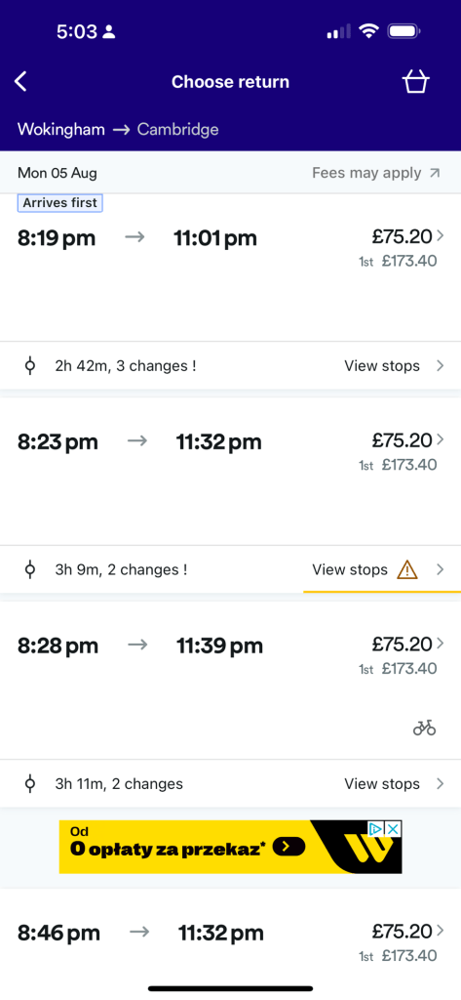
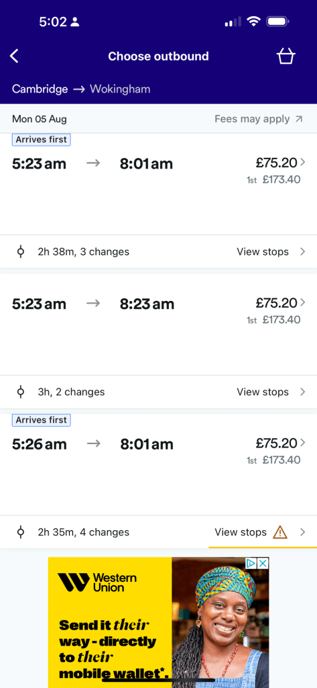
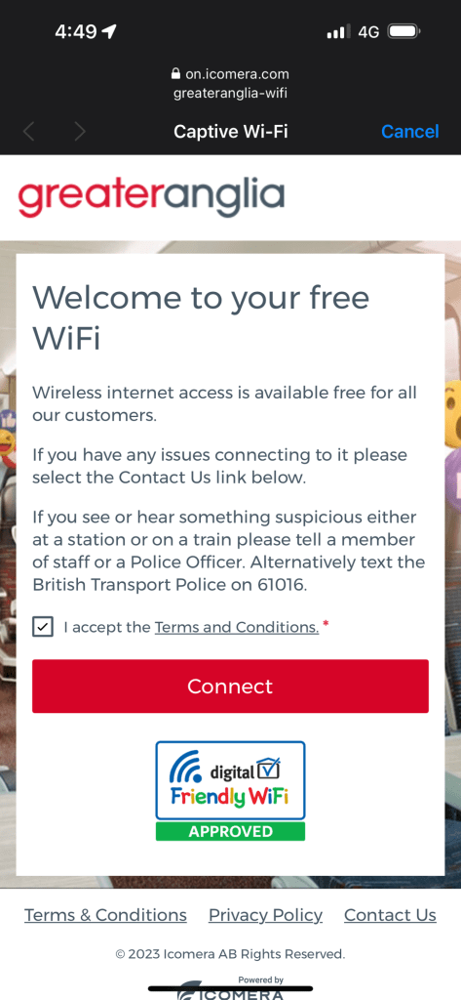
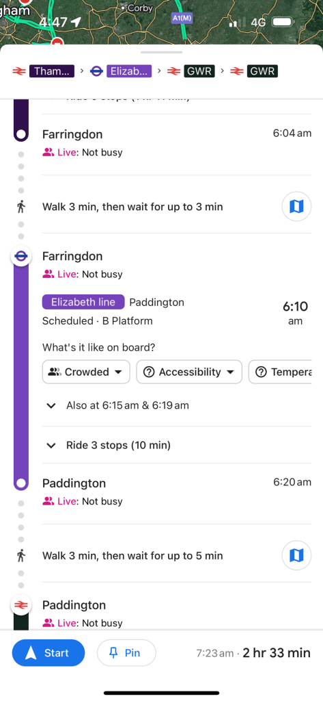
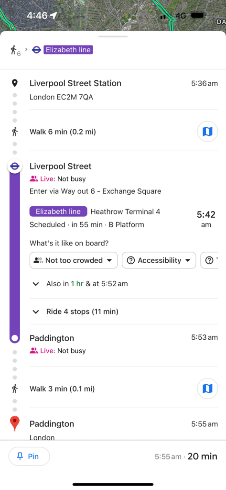
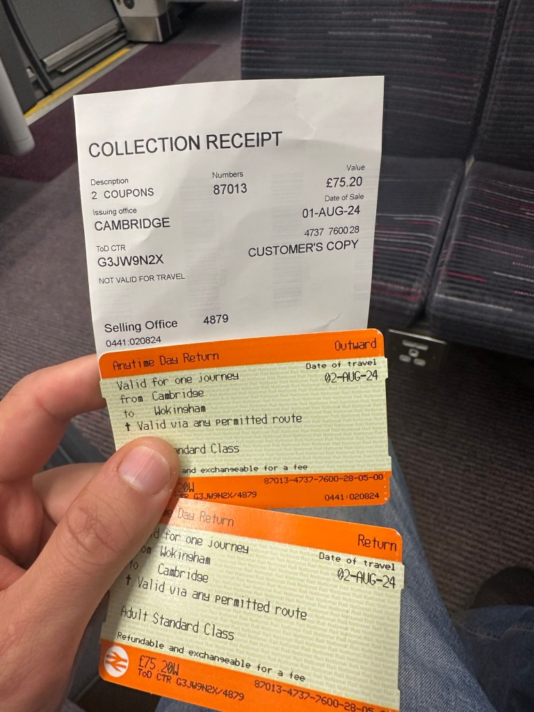
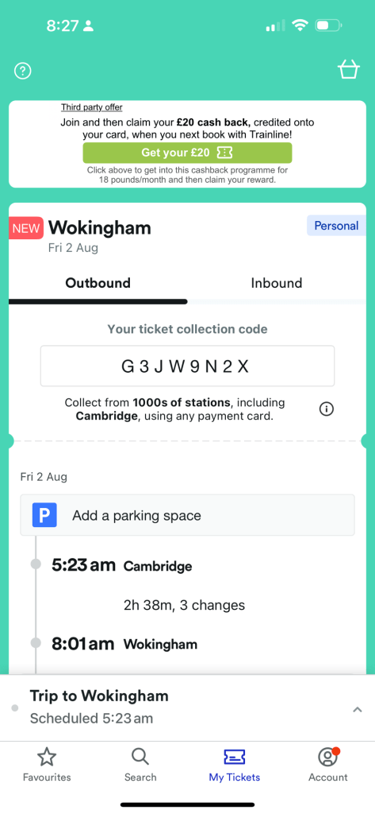
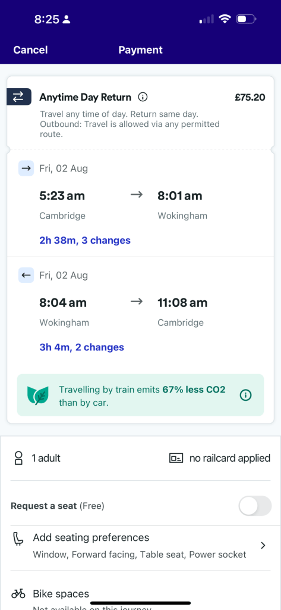

Why Frequent Releases Are Important: A Case Study of Trainline's App Return Times Issue
In the fast-paced world of software development, frequent releases are not just a luxury but a necessity. The importance of this practice becomes evident when we examine real-world examples where the lack of timely updates leads to significant user frustration. A prime example is the Trainline app's persistent issue with incorrect return times, as evidenced by my recent experience.
The Problem
Recently, I encountered a problem while booking return tickets using the Trainline app. Despite carefully selecting the desired return times, the app repeatedly failed to save my preferences correctly. Even after booking the tickets and returning to the app just two minutes later, the times were still incorrect. This issue is not just a minor inconvenience but a significant flaw that can disrupt travel plans and erode user trust.
Evidence:
-
Incorrect Return Times: Screenshots from the Trainline app show discrepancies in the return times selected and those actually displayed on the ticket.
-
Ticket Proof: Photographs of the physical tickets and the app's booking summary further highlight the mismatch.
The Importance of Frequent Releases
-
Bug Fixes and Stability Improvements:
Frequent releases ensure that bugs, such as the one described, are addressed promptly. Regular updates allow developers to respond to user feedback swiftly, enhancing the app's reliability and user satisfaction. -
User Trust and Retention:
Users expect their apps to function correctly and efficiently. When an app fails to perform basic tasks like saving selected return times, it diminishes user trust. Regular updates that fix issues and improve functionality demonstrate a commitment to providing a high-quality user experience, thus retaining user loyalty. -
Security Enhancements:
Security vulnerabilities can be a significant concern for any app. Frequent updates ensure that any discovered security issues are patched quickly, protecting user data and maintaining the app's integrity. -
Competitive Edge:
In a competitive market, staying ahead with new features and improvements is crucial. Regular releases keep the app relevant and competitive by continually enhancing its capabilities and user experience.
AI Integration for Enhanced Functionality
AI and Machine Learning Integration:
To further improve the user experience, integrating AI systems with machine learning capabilities can be beneficial. AI can analyze user behavior, predict potential issues, and offer real-time solutions. For example, if the app detects that the selected return times are not saved correctly, it can alert the user and suggest corrective actions immediately.
Machine learning can enhance this process by learning from past data to predict and preemptively resolve common issues. Over time, the system can become more efficient at identifying patterns and offering solutions before users even encounter problems.
User Interaction:
Users typically interact with the Trainline app by selecting departure and return times, viewing potential routes, and purchasing tickets. An AI system can enhance this experience by providing personalized recommendations based on past travel behavior, current travel trends, and real-time data.
Implementing Warnings and Updating Business Rules
Warnings in the App:
Implementing warnings can significantly enhance user awareness and satisfaction. If the app detects a discrepancy between the selected and saved times, a warning message should prompt the user to recheck their booking before finalizing the purchase. This proactive approach can prevent potential travel disruptions.
Updating Business Rules:
The Trainline app’s business rules should be updated to ensure more rigorous testing and validation of selected travel times. Implementing automated checks during the booking process can catch errors early and prompt users to confirm their choices.
Outlining Possible Routes with Timelines
Possible Routes:
To provide a seamless user experience, the app should offer detailed route options with clear timelines. For example:
-
Option 1: Departs at 8:19 PM, arrives at 11:01 PM, with 2 hours 42 minutes travel time and 3 changes.
-
Option 2: Departs at 8:23 PM, arrives at 11:32 PM, with 3 hours 9 minutes travel time and 2 changes.
-
Option 3: Departs at 8:28 PM, arrives at 11:39 PM, with 3 hours 11 minutes travel time and 2 changes.
Each option should include a breakdown of transfer times and locations, helping users make informed decisions.
AI-Driven Releases: The Future of App Development
Integrating AI with machine learning into the Trainline app should lead to a new release that addresses these issues comprehensively. Such a release would not only fix existing bugs but also continuously improve the app based on user behavior and feedback.
Key Features of an AI-Driven Release:
-
Real-Time Error Detection: Automatically identify and correct discrepancies in user selections.
-
Personalized Recommendations: Offer tailored route suggestions based on individual user preferences and travel history.
-
Predictive Alerts: Notify users of potential issues before they occur, based on machine learning predictions.
-
Enhanced User Feedback Loop: Continuously gather and analyze user feedback to improve app functionality and performance.
Conclusion
Frequent releases are vital for maintaining an app's functionality, security, and user trust. The Trainline app's struggle with return time accuracy is a testament to the potential pitfalls of infrequent updates. By prioritizing regular releases and integrating AI with machine learning, app developers can ensure that issues are resolved promptly, user feedback is addressed, and the overall user experience is continually enhanced. Incorporating AI can provide real-time solutions and personalized recommendations, further improving the user experience. Additionally, implementing warnings and updating business rules can prevent errors and ensure accurate bookings. In a world where user expectations are high, and competition is fierce, frequent and reliable updates are not just beneficial—they are essential.








Imported from rifaterdemsahin.com · 2024